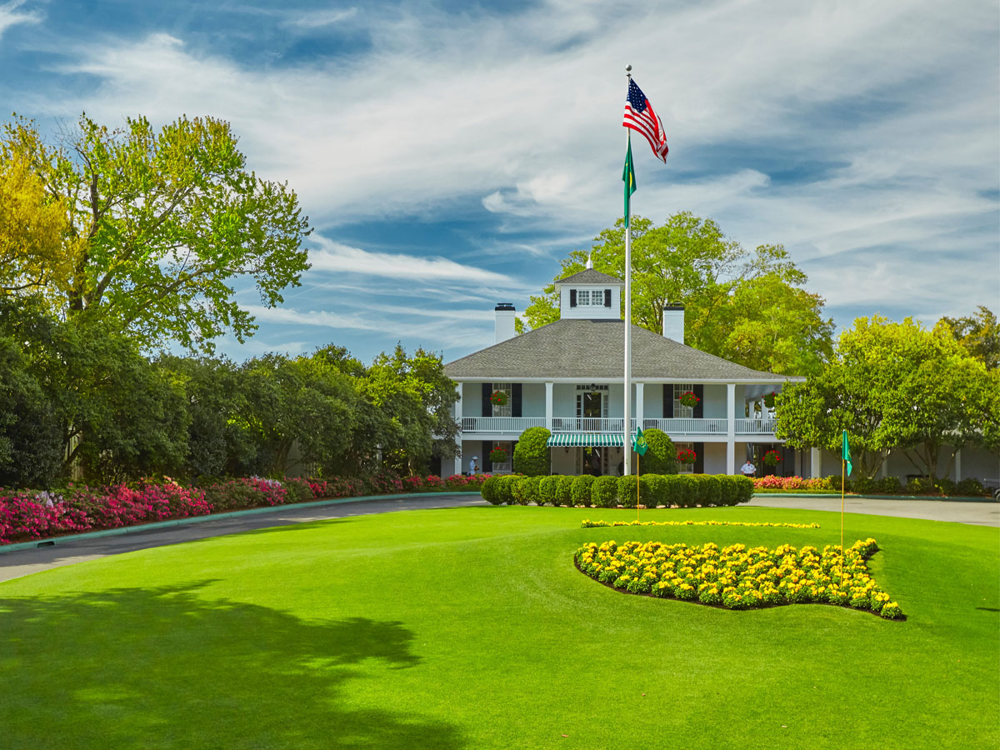
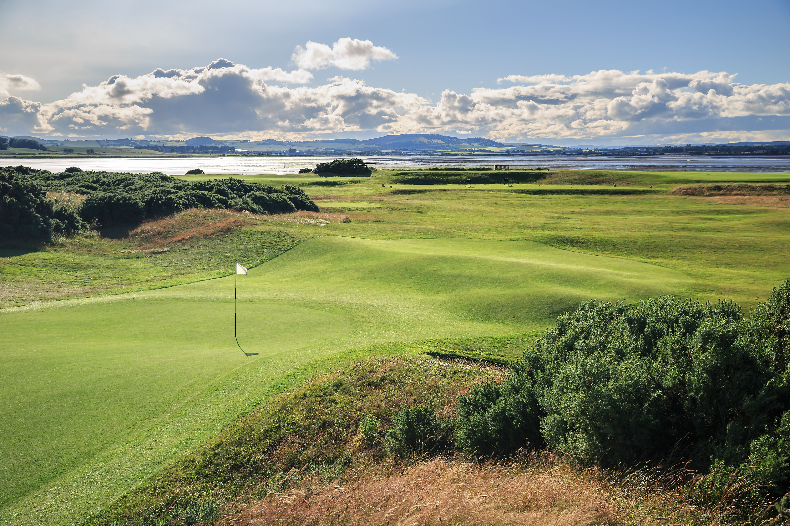

Club Distance & Swing Cue Guide

Knowing your average yardage is only half the battle. Pair your target distances with these proven caddie setup and swing cues to strike every club solidly off the turf or tee.
Driver & Fairway Woods

🎯 Distance Baseline
- 220+ Yds Driver: Maximum distance off the tee.
- 200-220 Yds 3-Wood: Long option off tee or turf.
💡 Caddie Swing Cues
- Ball Position: Inside lead heel (front foot).
- Spine Angle: Tilt shoulders slightly back away from target to sweep UP on the ball.
- Swing Thought: "Wide takeaway, smooth tempo, stay behind the ball at impact."
Hybrids & Long Irons

🎯 Distance Baseline
- 185-200 Yds 5-Wood / Hybrid: Versatile long approach.
- 170-185 Yds 4 & 5-Iron: Long green approach.
💡 Caddie Swing Cues
- Ball Position: One ball width forward of stance center.
- Stance: Shoulder-width with level hips.
- Swing Thought: "Let the club loft work—brush the grass, don't chop down."
Mid & Short Irons

🎯 Distance Baseline
- 145-160 Yds 7-Iron: Go-to mid-iron scoring club.
- 120-135 Yds 8 & 9-Iron: High trajectory pin hunter.
💡 Caddie Swing Cues
- Ball Position: Dead center of your stance.
- Weight Distribution: 55% weight on your lead foot at address.
- Swing Thought: "Compress the ball—hit ball first, take a small divot AFTER impact."
Scoring Wedges & Pitching

🎯 Distance Baseline
- 100-120 Yds Pitching Wedge (PW): Full wedge control.
- 75-95 Yds Sand Wedge (SW): High soft landing approach.
💡 Caddie Swing Cues
- Ball Position: Slightly back of center (near trail heel for chips).
- Stance: Narrow stance with feet open to target.
- Swing Thought: "Accelerate through impact—never decelerate on short swings!"